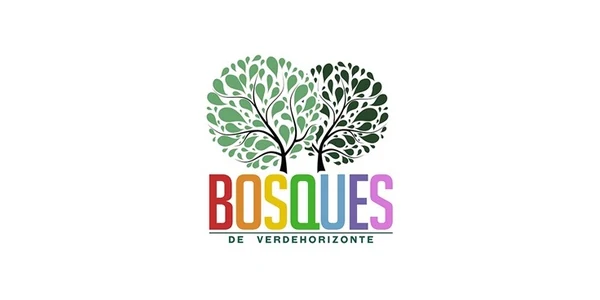
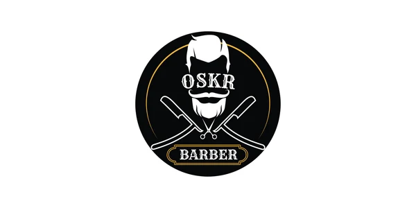
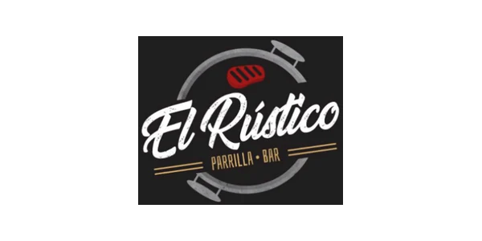
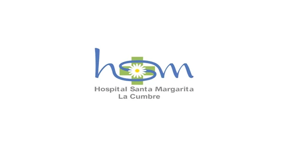
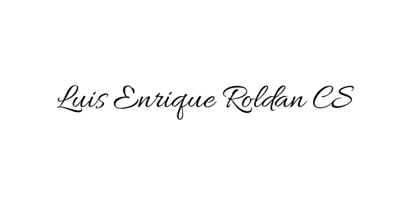
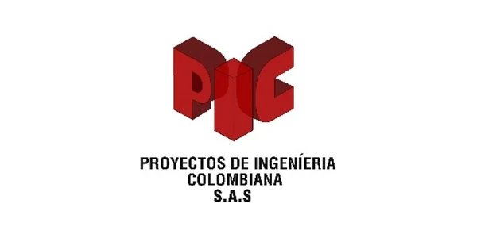
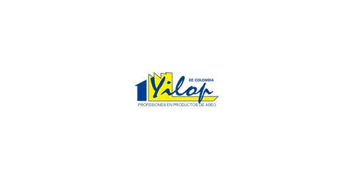
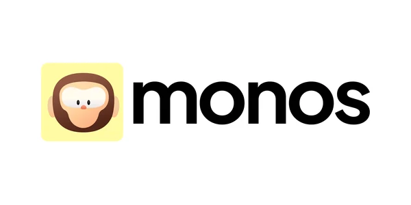

Control y confianza para decisiones que no pueden depender de suposiciones.
Auditoría, revisoría fiscal, control interno y gestión de riesgos con evidencia, claridad y criterio profesional.
Integramos auditoría, propiedad horizontal, automatización e inteligencia de datos para convertir operaciones complejas en decisiones claras, trazables y más rápidas.
Palacios Asesores & Revisores se involucra como aliado estratégico para comprender la necesidad, organizar la respuesta y acompañar su implementación.
Auditoría, revisoría fiscal, control interno y gestión de riesgos con evidencia, claridad y criterio profesional.
Propiedad horizontal, contabilidad, avalúos, gestión documental y cumplimiento conectados con la operación real.
Automatización, analítica, inteligencia artificial y desarrollo a medida enfocados en problemas concretos.
No todos los servicios tienen el mismo peso. Estas tres líneas concentran los retos donde la firma integra mejor conocimiento, gestión y tecnología.
Identificamos riesgos, fortalecemos controles y convertimos la información en decisiones que protegen y mejoran su organización.
Cuando la auditoría llega tarde, el riesgo ya tomó decisiones por usted.
Explorar esta solución Criterio profesional · Riesgo · Evidencia
Criterio profesional · Riesgo · Evidencia
Fortalecemos el control financiero, administrativo, documental y operativo de propiedades horizontales residenciales, comerciales y mixtas.
Una copropiedad no debería depender de información dispersa ni de una sola persona.
Explorar esta solución Administración · Control · Transparencia
Administración · Control · Transparencia
Diseñamos automatizaciones, sistemas, analítica e inteligencia artificial para mejorar la productividad, el control y la trazabilidad.
Si el equipo vive consolidando archivos, la tecnología todavía no está trabajando para la organización.
Explorar esta solución Procesos · Datos · Automatización
Procesos · Datos · Automatización
Ayudamos a convertir señales dispersas en asuntos priorizados, decisiones y acciones con seguimiento.
El proceso se adapta al servicio, manteniendo conversaciones claras, responsables visibles y entregables definidos.
Entendemos el reto y a quién afecta.
Revisamos información, riesgos y restricciones.
Definimos alcance, prioridades y entregables.
Ejecutamos con evidencia y coordinación.
Aclaramos, transferimos y hacemos seguimiento.
Revisamos avances y oportunidades de mejora.
La firma reúne conocimiento de auditoría, procesos administrativos, propiedad horizontal, tecnología, datos, avalúos, riesgos LA/FT y gestión documental.
No publicamos cifras, certificaciones ni testimonios que no estén respaldados. La confianza comienza por comunicar con precisión.
Auditoría, control financiero, revisoría fiscal y visión ética de la firma.
Procesos administrativos, propiedad horizontal, calidad y acompañamiento.
Automatización, software a medida, analítica y transformación digital.
Avalúos, riesgos LA/FT, gestión documental y capacidades complementarias.
La relación y el alcance han variado según las necesidades de cada organización.








Conectamos procesos, datos, controles y herramientas digitales para que la operación sea más trazable y la información llegue a tiempo.
Una conversación inicial permite entender el contexto, precisar el alcance y definir si podemos aportar valor.